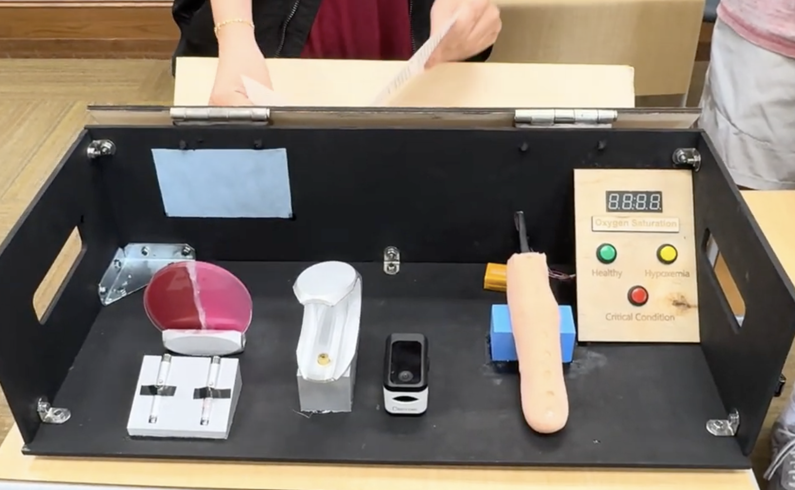
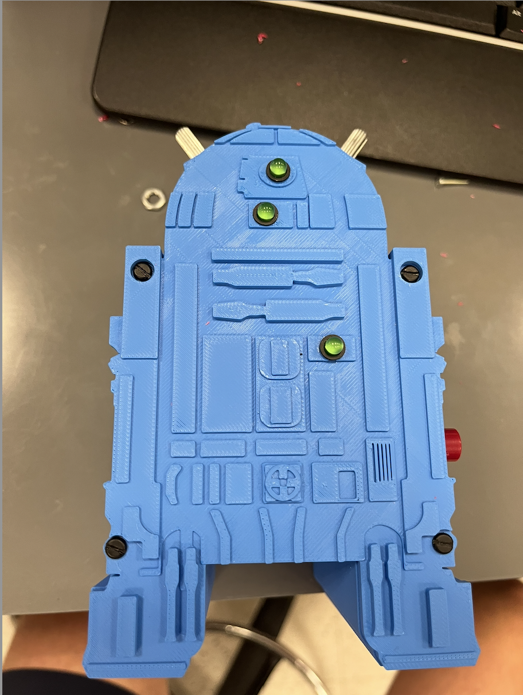

Liam Korol
I am a Junior studying Mechanical Engineering at Duke University, participating in the Biomedical Engineering Design Fellows program and passionate about the medical field and medical devices.
Explore my work ↗YOUR
HEADSHOT
HEADSHOT
Selected work
View all projects ↗
Oxygenius
An educational tool teaching Durham middle and high schoolers the scientific concepts behind pulse oximetry.

R2D2 Lightbox
An interrupt-driven lightbox integrating Arduino firmware, a custom PCB, and a 3D-printed enclosure.

Timer Box
A timer-controlled dispenser that uses a motorized rubber wheel and a custom spring mechanism to release paper flyers at a scheduled time.